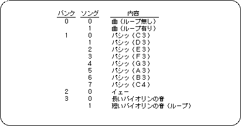
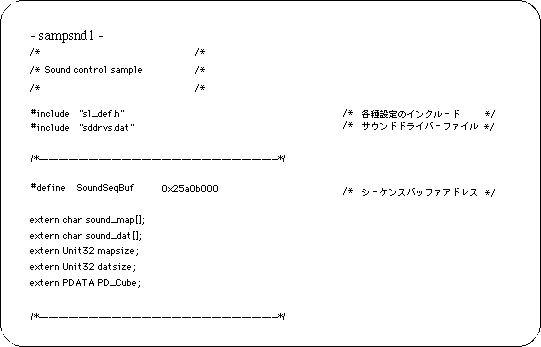
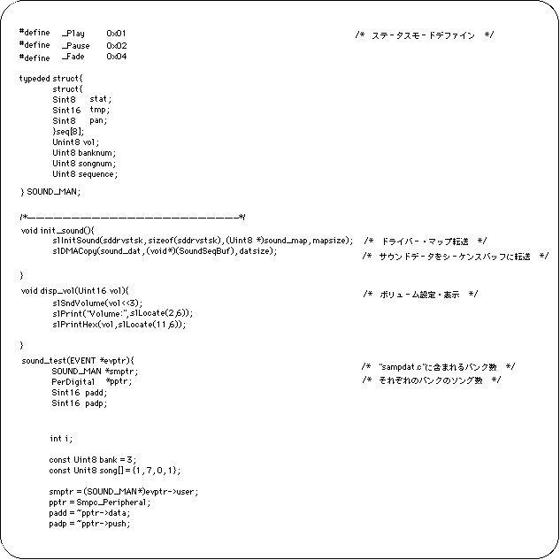
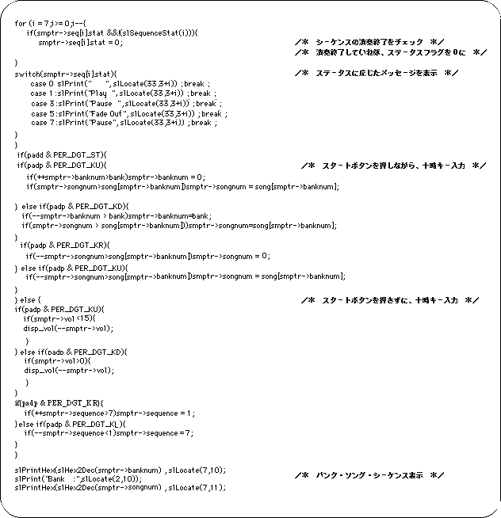
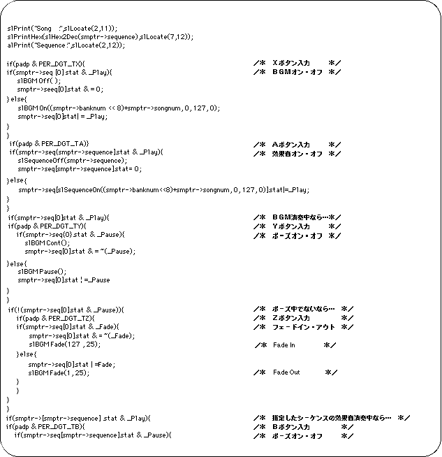
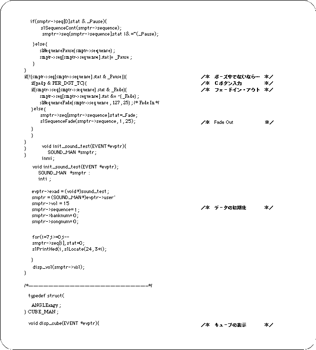
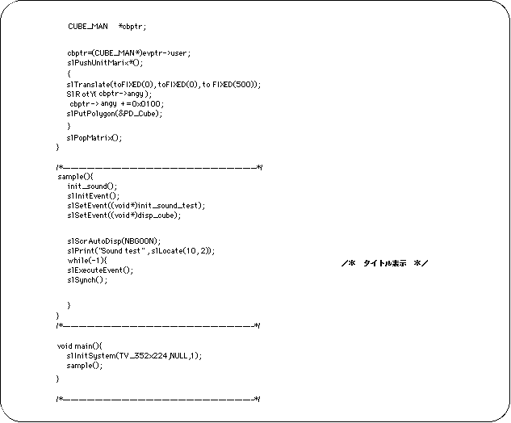
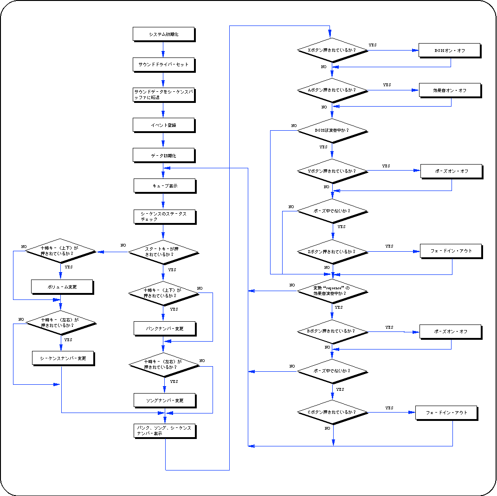

Return to previous page | Return to menu | Go to next page
The following sample program was created for BGM and sound effects playback tests. The data file used in this sample has the following structure.

The song specified in the bank and song is played as BGM by pressing the X button and played as a sound effect by pressing the A button. Banks and songs can be specified using the Start key and the 10:00 key. The Y button and B button are paused on and off for BGM and sound effects, respectively, and the Z and C buttons are faded in and out. The sequence number of the sound effect can be specified on the left and right of the 10 o'clock key.






